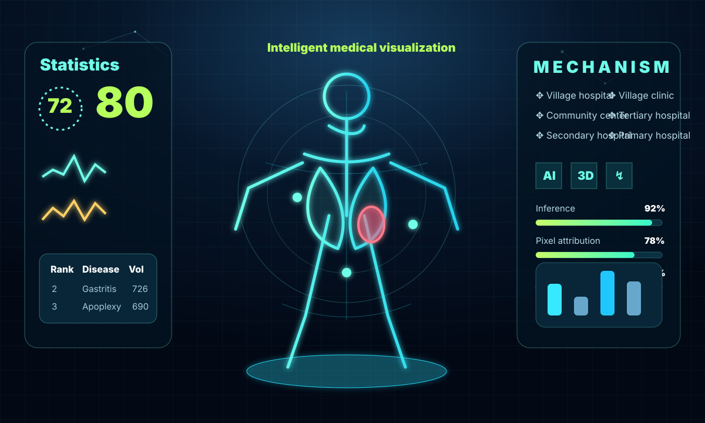

Upload & triage
DICOM, NIfTI, CT, and MRI intake with patient-study context and visible queue state.
Intelligent medical visualization
A polished interactive showcase inspired by the provided futuristic visualization reference: DICOM review, MONAI tumor segmentation, 3D anatomy, annotations, reports, and mask exports in one responsive experience.
Full-stack workflow
Every card is crafted as part of a static product showcase, with motion tuned for accessibility and enough implementation detail to communicate senior product thinking.
DICOM, NIfTI, CT, and MRI intake with patient-study context and visible queue state.
MONAI/PyTorch pipeline seam for tumor masks, confidence scoring, and mask exports.
Cornerstone.js viewer patterns for windowing, measurement, annotation, and overlays.
vtk.js-ready anatomy cards for mesh previews, reconstruction state, and clinical review.
Responsible demo
MedVisionAI demonstrates architecture and interaction design for medical imaging workflows. Clinical deployment would require validation, PHI controls, audit logging, de-identification, model governance, and regulatory review.
